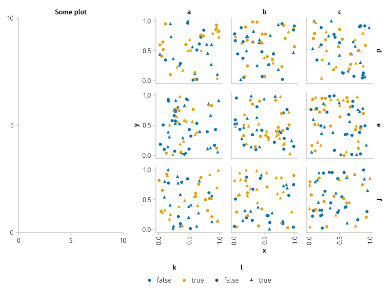
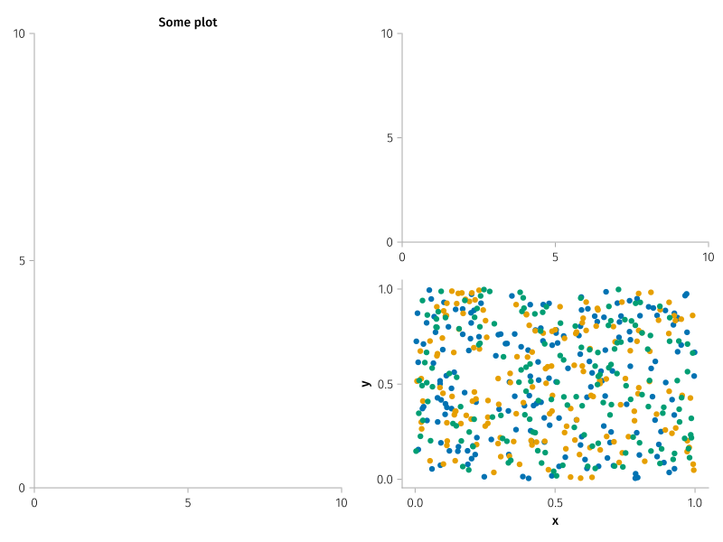

Nested layouts

using AlgebraOfGraphics, CairoMakieAll AlgebraOfGraphics plots can be inserted in any figure position, where the rest of the figure is managed by vanilla Makie. For example
fig = Figure(; size=(800, 600))
ax = Axis(fig[1, 1], title="Some plot")
df = (
x=rand(500),
y=rand(500),
i=rand(["a", "b", "c"], 500),
j=rand(["d", "e", "f"], 500),
k=rand(Bool, 500),
l=rand(Bool, 500)
)
plt = data(df) * mapping(:x, :y, col=:i, row=:j, color=:k, marker=:l)
subfig = fig[1, 2:3]
ag = draw!(subfig, plt)
for ae in ag
ae.axis.xticklabelrotation[] = π/2
end
legend!(fig[end+1, 2], ag, orientation=:horizontal, tellheight=true)
fig
The above also works in more nested situations.
f = Figure(; size=(800, 600))
ax = Axis(f[1, 1], title="Some plot")
subfig = f[1, 2]
ax2 = Axis(subfig[1, 1])
df = (
x=rand(500),
y=rand(500),
c=rand(["a", "b", "c"], 500),
)
plt = data(df) * mapping(:x, :y, color=:c)
draw!(subfig[2, 1], plt)
f
It is also possible to let Makie control the axis and plot directly on top of it.
f = Figure(; size=(800, 300))
ax1 = Axis(f[1, 1])
ax2 = Axis(f[1, 2])
df = (x=rand(100), y=rand(100), c=rand(["a", "b", "c"], 100))
plt = data(df) * mapping(:x, :y, color=:c)
scatter!(ax1, rand(10), rand(10), color=:black)
grid = draw!(ax2, plt)
legend!(f[1, 3], grid)
f
This page was generated using DemoCards.jl and Literate.jl.